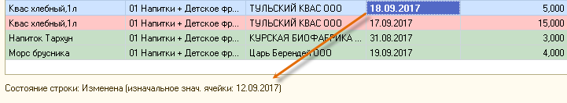
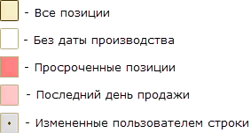
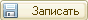
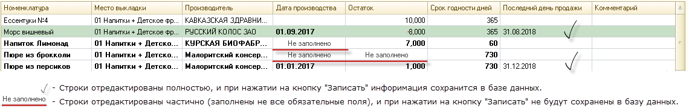

(Товародвижения → Контроль просрочки по товарам)
Форма "Контроля просроченного товара" предназначена для оперативного анализа позиций срок годности у которых "не указан", "истек" или "подходит к концу".
Источник данных
Источником данных для отображения "остатков просроченного товара" является таблица в базе данных, которая заполняется следующим образом:
1. Изначально таблица заполнена автоматически фактическим остатком по магазину (единоразово).
При начальном заполнении, использовался фактический остаток товара по магазину, а "дата производства" (по каждой позиции) установлена из последней "товарной операции (поступления)".
Примечание: Автоматически сформированные записи отмечены комментарием "Перенос остатков" (см. таблицу Истории изменений).
2. Таблица оперативно дополняется данными из "товарной операции с кодом 400" (Товародвижения → Журнал товарных операций → (400) Поставка товара со склада).З. Из таблицы автоматически списываются позиции, по которым фактический остаток по магазину равен "0".
Примечание: Автоматически сформированные записи отмечены комментарием "Correction" (см. таблицу Истории изменений).
4. Остальные изменения вносятся пользователями интерактивно (добавление, удаление и редактирование строк).
ВНИМАНИЕ! Остатки позиций продукции (колонка "Остаток") являются "условными" и не соответствуют фактическому остатку по магазину, поэтому корректировка количества в колонке "Остаток" (во время проверки/исправления сроков годности) носит сугубо рекомендательный характер и не является обязательным условием.
Колонка "Остаток (факт.)" - отображает фактический остаток на момент заполнения таблицы (кнопка "Заполнить")
Основная форма
1. Главное меню
Содержит основные элементы управления для работы с формой:
• Добавить (Ins) - Добавление новой строки в табличную часть (новая строка добавляется под активной строкой).
• Скопировать (F9) - Копирование строки (новая строка добавляется под активной строкой).
• Удалить (Del) - Удаление строки из табличной части товаров. При этом добавленные пользователем (и еще не записанные в базу данных строки) строки удаляются сразу, а строки которые были загружены из базы данных (при открытии или нажатии на кнопку "загрузить") отмечаются зачеркнутой линией. Такие строки фактически будут удалены при нажатии на кнопку "Записать".
• Копки сортировки по активной колонке.
• Копки поиска и отмены поиска.
• Заполнить - Заполнение табличной части товаров.
• Показать историю - Отображение/Скрытие таблицы "Истории изменений".
• Печать - Отправка списка таблицы товаров на печать (на принтер, без просмотра).
• Вывести список () - Вывод списка позиций для возможности редактирования и дальнейшей печати.
• Открыть значение (Лупа) - Открывает значение элемента, активной ячейки табличной части товаров.
2. Табличная часть товаров
Содержит перечень позиций загруженных из базы данных (см. Источник данных для отображения).
При открытии формы, табличная часть заполняется автоматически (при необходимости актуализировать информацию необходимо нажать кнопку "Главное меню → Загрузить").
Данные в табличной части разделены на четыре категории:
Колонки табличной части:
• Номенклатура (Редактируется) - Для выбора доступны позиции, которые относятся к "текущему магазину".
• Место выкладки (Не редактируется) - Подставляется автоматически.
• Производитель (Редактируется/Не редактируется) - В строках (добавленных пользователем) реализована возможность выбора из списка (определяется характеристикой номенклатуры). Для загруженных из базы данных строк возможность редактирования производителя ограничена.
При необходимости изменить производителя в такой строке следует:
1. Удалить строку с неверно указанным производителем.
2. Добавить новую строку, указав актуального производителя (рекомендуется использовать клавишу копирования строки (F9)).
• Дата производства (Редактируется) - В новых (добавленных пользователями) строках подставляется автоматически.
ВАЖНО: При заполнении табличной части строками из базы данных ("Главное меню → Загрузить" или при открытии формы) "Дата производства" присутствует не во всех позициях, а те даты производства, которые установлены системой могут не соответствовать датам производства, установленным в характеристике номенклатуры (см. Источник данных для отображения, п. 1).
• Остаток (Редактируется) - Условный показатель, который не соответствует фактическому остатку по магазину на текущий момент времени.
• Остаток (факт.)(Не редактируется) - Фактический остаток номенклатуры на момент заполнения таблицы товаров при открытии обработки, или нажатии на кнопку "Заполнить"(для обновления "Остатка факт." по конкретной позиции: Контекстное меню(правая кнопка мыши) → Обновить "Остаток (факт.)" по тек. позиции).
• Срок годности дней (Не редактируется) - Заполняется автоматически из характеристики номенклатуры.
• Последний день продажи (Не редактируется) - Рассчитывается автоматически.
• Комментарий (Редактируется) - Есть возможность редактирования, только по тем строкам, в которые пользователь вносит исправления!
3. Таблица истории изменений
Отображает данные об изменениях которые были внесены системой ("Перенос остатков", "Операции (400)" и "Correction"), а также о пользовательских корректировках.
Для того, чтобы отобразить/скрыть таблицу истории следует использовать кнопку: "Главное меню → Показать историю".
4. Область состояния текущей строки и отборов
В левом нижнем углу области расположена "строка состояния", которая отображает дополнительную информацию о текущей строке табличной части.
В зависимости от действий пользователя строка может принимать несколько состояний:
• Новая - Добавлена пользователями через "Добавить" или "Скопировать" строку.
• Изменена - Строка в которую были внесены изменения в рамках работы по исправлению дат производства.
• Удалена - Удаленные пользователями строки, которые еще не записаны в базу данных.
Также при активации отредактированной пользователем ячейки, в строке состояния будет отображена информация об изначальном значении показателя (до внесения корректировки):

5. Область быстрых отборов
В правом нижнем углу области расположена панель быстрых фильтров для отборов строк табличной части товаров по категориям:

Примечание: Быстрый отбор "Измененные строки" отображает отредактированные пользователем данные только до момента "записи их в базу данных" (т.е. до нажатия кнопки "Записать").
Дополнительные отборы
Область содержит вдополнительные отборы для быстрого поиска позиций или отборов товаров, срок годности которых подходит к завершению
• Номенклатура - Возможность поиска/отбора номенклатуры (ищет соответствия по части строки наименования)
• Отбор по срокам - Отображение только тех позиций у которых заканчиваются сроки годности
6. ЗАПИСАТЬ
ВНИМАНИЕ! При работе с табличной частью товаров (добавлении, удалении или редактировании строк) внесенные пользователем изменения попадают в базу данных только после нажатия на кнопку ""!
При этом строки, в которых заполнены не все обязательные поля записаны в базу данных не будут!
При редактировании табличной части (добавлении новой строки или изменения данных в ячейках) все обязательные поля система автоматически отмечает надписью "Не заполнено".
Примечание: Строки с признаком "Не заполнено" хранятся в табличной части товаров исключительно до повторного заполнения табличной части ("Главное меню → Загрузить").
Примеры частично обработаных пользователем строк, которые не записываются в базу данных при нажатии на кнопку "Записать":

Общие рекомендации при работе с формой
• Сохраняйте данные (кнопка "Записать").
• Старайтесь не оставлять большое количество строк с незаполненными обязательными полями ("Не заполнено").
• Пользуйтесь быстрым фильтром "Измененные строки" для проверки отредактированных данных перед "Записью".